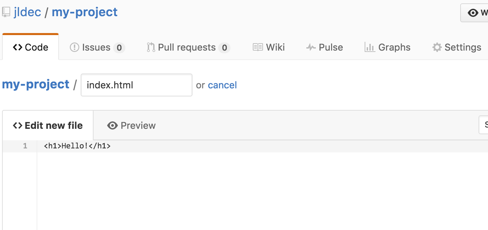

Git & Github
Documentation on how to setup and configure Git & Github and frequently used commands.
Git
Terminal Commands
Print Working Directory
pwd
Short Listing
ls
Long Listing
ls -al
Listing All
Shows hidden files/folders
ls -a
Change Directory
cd
Home Directory (root)
cd ~
or
cd /
Make Directory
mkdir
Make a File
touch
Display useful information re: repository
git status
Add commits to staging area
git add
Commit changes
git commit
Provide a list of all the latest commits
git log
Undo the changes made to a previous commit
git revert
Input git log in your terminal.
Select the first 7 hash characters from the commit you want to revert.
git revert -n 8969212
(the -n flag specifies that we do not want to commit the revert immediately.)
git status should indicate that you are currently reverting a specific commit.
(If you want to make the revert final, run the following command:)
git commit -m "Reverting the second commit"
If you want to revert back to the latest commit, use: git revert HEAD
Undo the changes made to a previous commit (not saving commit history)
git reset
git reset 8969212 --hard
(including the --hard modifier resets to a specific commit, but also cleans up working directory. Resets our files.)
Display Branches
git branch
Create a Branch
git branch personal_quotes
git checkout -b branch-name — Shorthand method of creating and checkout branches simultaneously.
git branch -d branch-name — Deletes a branch.
Switch Branches
git checkout
git checkout personal_quotes
Merges specific branches into your current branch (e.g. master)
git merge
git merge personal_quotes
When having a merge conflict that requires you to manually reconcile, remove the HEAD, >>>>>, and ==== signs from the file and modify the code to your liking.
Compares modifications made between files.
git diff
(+) in green indicates an addition, (-) in red indicates a subtraction or removal.
git diff filename.txt — Enables you to see changes made to one specific file.
Add a remote repository to your local repository
git remote add origin github-repo-url
git remote — Displays the names of any remotes available.
Push local commits to a remote repo
git push origin master
git push -u origin master — Tracks all branches we push to remote url.
git push is now a shorter command we can use.
Push all branches up to our remote origin repo.
git push --all origin
Pull any changes available on a remote repo down to a local repo.
git pull origin master
Stash or 'save' changes we made that we are not ready to commit yet.
git stash save
Reintroduce or add the changes we temporarily stashed back into the code.
git stash pop
Merge, but shift the starting point for the branch.
git rebase
Squash multiple commits into one commit.
git squash
VIM
If you forget to include the -m flag when committing your changes, a text editor called VIM will appear.
While within VIM, press 'i' on your keyboard to allow typing, followed by the commit message.
When finished, press 'esq' key, followed by :wq and enter to exit.
Terminology
-
HEAD — The latest commit on a current branch.
-
HEAD~1 — The commit before the latest commit.
Troubleshooting
Change the URI (URL) for a remote Git repository
git remote -v # View existing remotes # origin https://github.com/user/repo.git (fetch) # origin https://github.com/user/repo.git (push) git remote set-url origin git://new.url.here # Change the 'origin' remote's URL git remote -v # Verify new remote URL # origin https://github.com/user/repo2.git (fetch) # origin https://github.com/user/repo2.git (push) git push origin master
Forcing a Git Push
git push -f origin <branch>
Skip passphrase prompt for git ssh
eval `ssh-agent -s` ssh-add ~/.ssh/*_rsa
Github
How to setup Github Pages
User or organization site
Create a repository
Head over to GitHub and create a new repository named username.github.io, where username is your username (or organization name) on GitHub.
Clone the repository
Go to the folder where you want to store your project, and clone the new repository:
git clone https://github.com/username/username.github.io
Hello World
Enter the project folder and add an index.html file:
cd username.github.io echo "Hello World" > index.html
Push it
Add, commit, and push your changes:
git add --all git commit -m "Initial commit" git push -u origin master
…and you're done!
Fire up a browser and go to https://username.github.io.
Project site
Create an index file
Head over to GitHub.com and create a new repository, or go to an existing one.
Click on the Create new file button.

Hello World
Name the file index.html and type some HTML content into the editor.

Commit the file
Scroll to the bottom of the page, write a commit message, and commit the new file.

Repository Settings
Click on the Settings tab and scroll down to the GitHub Pages section.
Then select the master branch source and click on the Save button.

…and you're done!
Fire up a browser and go to http://username.github.io/repository.
Adding a domain name to Github Pages
-
Purchase a domain name from NameCheap
-
Please see NameCheap's How do I link my domain to GitHub Pages
Adding a new domain-name-accessible repo directory
(e.g. yourwebsite.com/docs)